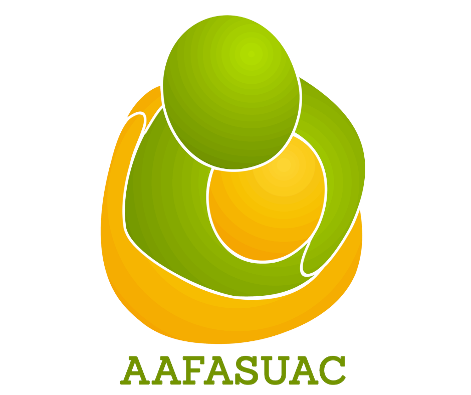

📍 Ver Todo el Mapa
➕
➖
A
Ofresco Mí Presencia Plena y Genuina
B
Motivando a Actores Comunitarios a ser Puente
C
Promoción de lo vital e intervención situacional
+
Autochequeo
+
Recursos Locales
×
Título de la Etapa
Descripción...